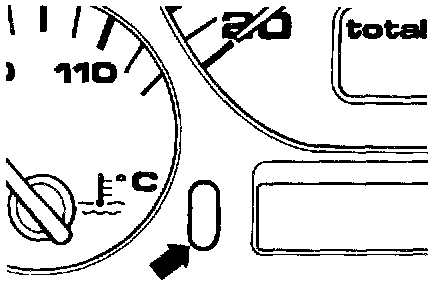

Resetting
After performing the specified maintenance, reset the Service Reminder Indicator (SRI) -F27- displays according to the following table:Service interval SRI displays to
reset
7500 mile (12,000 km) or OEL
6-month engine oil change
15,000 mile (24,000 km) or OEL
12-month maintenance IN01
22,500 mile (36,000 km) or OEL
18-month engine oil change
30,000 mile (48,000 km) or OEL
24-month maintenance IN01
IN02
37,500 mile (60,000 km) or OEL
30-month engine oil change
45,000 mile (72,000 km) or OEL
36-month maintenance IN01
52,500 mile (84,000 km) or OEL
42-month engine oil change
60,000 mile (96,000 km) or OEL
48-month maintenance IN01
IN02
etc. etc.
To Reset The SRI Displays:
- Switch ignition ON.

- Press and hold odometer reset button (arrow) located below speedometer.
- Switch ignition OFF and release odometer reset button. "OEL" will now appear in SRI display

- Press and hold lower digital clock reset button -1- or analog clock reset -2-, until five dashes ( _ _ _ _ _ ) appear in display.
OEL SRI is now reset for 7500 miles (12,000 km) or 6 months, whichever comes first
Once OEL is reset, the other displays can be reset the same way without switching the ignition on and off again.
- Press odometer reset button to proceed to IN01 display (15,000 mile maintenance) and reset using clock reset button.
- If necessary, repeat procedure to reset IN02 (30,000 mile maintenance) display.
To escape reset mode:
- Switch ignition ON; when "IN01" is displayed, switch ignition OFF.